Propaganda as Literature: A Distant Reading of the Korean Central News Agency’s Headlines
Xavier Marquez
(Warning: long and exhaustive discussion of propaganda that nobody reads or cares about, by a non-specialist in North Korean politics. Contains complicated interactive graphs best viewed on a laptop or desktop computer).
I’ve always been a bit puzzled about the existence of the Korean Central News Agency (KCNA) website in Japan. The site is defiantly Web 1.0: no pictures, static HTML, formulaic headlines in English and Spanish that would not have been out of place in a 1950s edition of Pravda.1 It’s not clickbait, to say the least, and one struggles to imagine that the stories there can actually inform or persuade anyone of anything.
Moreover, few people who might be plausibly interested can even read the site: it has always been blocked in South Korea, and since sometime in 2015, it also became inaccessible from outside Japan anyway. If you are actually interested in the North Korean perspective on current affairs, today you’d probably want to visit the new and spiffier Pyongyang-hosted website of KCNA, or KCNAWatch if you are a professional NK watcher.
And though the site may have had a signaling function before the emergence of these other websites, serving as a place where one could be sure of finding the official North Korean view of things, too many of its stories (“Kimilsungia show opens in Indonesia”, “floral basket from diplomatic corps”, “dancing parties of youth and students held,” to choose three headlines at random from the past decade) seem to be about matters of no interest whatsoever to just about anyone. Even the site’s value for understanding North Korean internal propaganda is dubious: as B. R. Myers has argued, actual North Koreans seem to be exposed to somewhat different propaganda content than that produced for the outside world.
The entire Chongryon-hosted enterprise thus seems almost completely devoid of informational and propaganda value today, if it ever had any; it is a classic example of “propaganda without readers.” This lack of strategic or informational value, however, may be useful if we are interested in these headlines as expressive literature. From this point of view, we can try to make sense of KCNA stories not as strategic attempts to convince people to support the North Korean regime, or to credibly signal particular commitments to external audiences, but simply as the nearly automatic manifestation of the North Korean state’s own commitments to itself. Much KCNA content may therefore be more susceptible to literary than political analysis.
But. These headlines and stories are REALLY BORING. (They are nothing at all like reading @DPRK_News on Twitter!) So instead of reading them myself, I thought I’d rather get my computer to read them – and in the process learn a bit about computer-aided text mining. Thus a couple of years ago, in one of my fitful efforts to learn more R programming, I scraped nearly all KCNA headlines from January 01 1997 to September 25 2014 (n = 114641). (A few dates are missing, mainly in 1997-1998, because my web scraping program was not perfect, but most dates are there). The project gathered dust, but over the past few months I’ve had some time to do some proper analysis.
So what do we learn from doing a “distant reading” of KCNA content? In general, as we shall see, nothing too surprising if you have any acquaintance with North Korea. KCNA turns out to produce mostly a sort of humdrum bureaucratic literature that precisely reflects the hierarchies of North Korean politics and draws extensively on nationalist themes, and where the members of the Kim family play a key role. But some things are surprising, such as the particular ways in which the Kims are actually portrayed and celebrated, or the uniformity of its themes over more than 15 years.
WARNING: EXCRUCIATINGLY DETAILED DISCUSSION OF SOME OF THE MOST BORING TEXTS EVER PRODUCED IN THE HISTORY OF THE WORLD FOLLOWS. DON’T SAY I DIDN’T WARN YOU
Dramatis Personae: Who does KCNA talk about?
One obvious question to ask of the headlines is simply who are the main dramatis personae, and how they are related to one another. I thus first extracted from the headlines all mentions of people with Korean names I could find, and used the magic of DBpedia to identify the roles of as many of these as I could. Now, most headlines (~80%) do not mention anyone with a Korean name I can detect, but the obvious people (e.g., Kim Jong Il, Kim Il Sung, and Kim Jong Un) are mentioned far more than anyone else. Indeed, the number of times a person with a Korean name is mentioned over this period (which contains most of the period of Kim Jong Il’s rule, from 1997 until his death in 2011) is reasonably well approximated (for the upper tail of the distribution) by Zipf’s law, with Kim Jong Il as the most mentioned person, followed by his father and his son:2
The number of mentions also reflects a strict hierarchy: members of the Kim family are the most mentioned, followed by Kim Yong Nam (a long-time foreign minister and the nominal head of state between 1998 and 2009 – no relation to the Kim dynasty), several South Korean presidents (Lee Myung Bak, Park Geun Hye, and Kim Young Sam), several North Korean government ministers (e.g., Pak Ui Chun), senior figures in the Worker’s Party of Korea, and so on, down to more ordinary people. (Some important names that may be unfamiliar: Kang Pan Sok was Kim Il Sung’s mother; Kim Hyong Jik was his father; and Kim Jong Suk was his wife).
We shouldn’t take the numbers in this particular picture too seriously; for one thing, as the years pass, Kim Jong Un would have been mentioned much more frequently, and in any case my name detection algorithm is not perfect. Moreover, perhaps mentions of people in news headlines around the world always follow this pattern – it certainly sounds plausible that the distribution of personal names in news headlines all over the world follows the kind of distribution that is well modeled by power laws of some sort, at least for the upper tail. After all, most people in the world are never mentioned in the news, and a disproportionate share of mentions must go to important public figures.
But the disparity in mentions between the Kims and almost everyone else is nevertheless striking, one bit of evidence of the “cultic” expressive function of the KCNA headlines. Conversely, among the 315 people with Korean names mentioned only once in the headlines, 31 are noted in the context of their funeral, when one of the Kims “sends a wreath to the[ir] bier,” as the headline formula has it; they are mentioned only in death.
Moreover, the three members of the Kim family also monopolized a very large proportion of all KCNA headlines throughout this period. For example, whenever Kim Jong Il was mentioned, he took up, on average, 14% of the headlines for the day. The average number of headlines per day is about 21 (median 19), so he was typically mentioned in the headlines of at least two stories whenever he was mentioned at all (he was mentioned in about 10% of all headlines, if we include the days when he’s not mentioned). Similarly, Kim Jong Un took up 13% of the headlines on average on days he was mentioned, and Kim Il Sung another 9%. On average over 10% of all headlines mention at least one of them in this period, with a slightly increasing trend since Kim Jong Il’s death. (The proportion of headlines mentioning members of the Kim ruling family on particular days can obviously be much larger; on some days, one or more of them were mentioned in more than half of all headlines).
Below, the dashed curve shows the smoothed proportion of mentions of the Kim family on all days; the solid curve shows only the proportion on days in which at least one of them is mentioned:
These proportions seem to me really high. For contrast, in a sample of headlines I gathered a few years ago from the Falangista organ Arriba during the 1940s, I don’t seem to get nearly the same proportion of mentions of Franco, though my sample is biased towards days where Franco is actually mentioned. (But I can’t tell for sure yet, since Arriba has many different ways of referring to Franco, and I gathered nowhere near every headline for the period). And according to Jan Plamper’s examination of Pravda from 1929 to 1953, Stalin did not seem to be mentioned or depicted nearly as often as the Kims are mentioned (though Plamper focuses on visual representations rather than mentions). Part of the reason for this disparity may be that both Pravda and Arriba actually did have to function at least in part as informational and propaganda organs, whereas KCNA operates under no such constraints, and is therefore free to serve purely expressive purposes. (Nobody reads KCNA to be informed of the news, in part because nobody reads KCNA, period).
Not only did the Kims monopolize a very large proportion of the headlines, they are also mentioned in very distinctive contexts. Using a technique called global word vector embeddings – basically, a way of transforming words into numerical vectors that captures similarities in meaning among them based on their patterns of co-occurrence with other words3 – we find that the names of the Kim dynasty are quite “similar” in meaning to one another within the KCNA imaginary (in the sense that their mentions occur in very similar contexts) – and very “dissimilar” in meaning to the names of just about anyone else.
In the graph below, I cluster the names of all Korean people mentioned at least 5 times in the corpus according to their degree of “semantic similarity” (see details in the code for this post). This “similarity matrix” defines a graph, where two people are connected to one another if they score at least 0.3 in a metric ranging from -1 (totally dissimilar contexts) to 1 (totally similar contexts). A similarity of 0.8 or above is a good sign the words are basically synonymous in the corpus. (This is actually kind of magical, given that the computer knows nothing about the text save for the pattern of word co-occurrence!). The three Kims (among the dark Green nodes) all share similarities with one another of over 0.6 (though the younger Kim Jong Un is less contextually similar to his grandfather than his father is, partly because both father and grandfather are dead by the time he begins appearing in the headlines):
The other thing that jumps out from this graph is the degree to which South Korean presidents appear segregated into two distinct semantic communities: one that has as its members Lee Myung Bak, Kim Young Sam, and current president Park Geun Hye; and the other comprising Kim Dae Jung and Roh Moo Hyun. The first community is almost completely disconnected from anyone else, presumably reflecting their particular hardline policies and the consequent hostility of the North to them, while the second is much more tightly linked to various North Korean politicians, presumably reflecting a more positive view of them in view of their more conciliatory policies. (The remaining communities seem reasonable: North Korean politicians are mentioned in contexts similar to one another, as are the remaining members of the Kim dynasty; and Kim Yong Nam appears as a tightly connected node, reflecting his position as long-term Foreign Minister and head of state during much of this period).
Anger and Reverence: What emotions does KCNA express?
The overall number of mentions is not always a very good measure of popularity or respect; as we saw above, the fifth most mentioned person in this KCNA corpus (more than 1000 times) is the former South Korean president Lee Myung Bak, who was not especially beloved in the North given his hard-line policies toward the DPRK. Instead of looking simply at the number of mentions, however, we can look at the picture that emerges when we look at sentiment (positive or negative) in the headlines mentioning particular people over time. To this end, I used the NRC sentiment lexicon, included in the tidytext R package.4 This is not ideal (sentiment dictionaries are not highly context-sensitive, and they can sometimes produce funny results given the vocabulary of KCNA headlines, as we shall see), but the results are still useful as a way to get a broad-brush picture of KCNA’s likes and dislikes.
In the images below, the length of the bars encodes the proportion of all headlines that mention a specific person on a given date, and the color of each bar indicates the degree to which the headlines mentioning them express positive or negative sentiments (redder bars mean more negative sentiment in the set of headlines mentioning that person for that day on average, white means neutral sentiment, blue means more positive sentiment; Spanish-language headlines – about 20% of the total on any given day – do not have any sentiment scores assigned to them, and so would add to the grey bars). The vertical dashed line denotes the average proportion of headlines that mention the specific person for the dates where at least one headline mentions them (not as a proportion of all headlines, note!). Local peaks (days where the proportion of mentions of a person in headlines is unusually high) are labeled on the y axis, and a sample headline is shown for these dates:
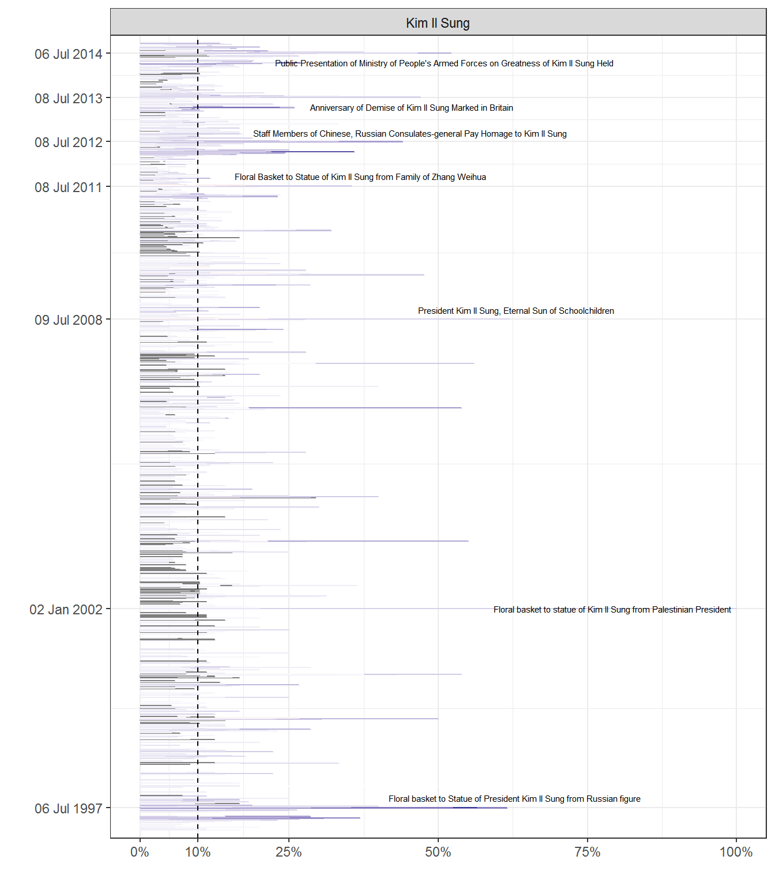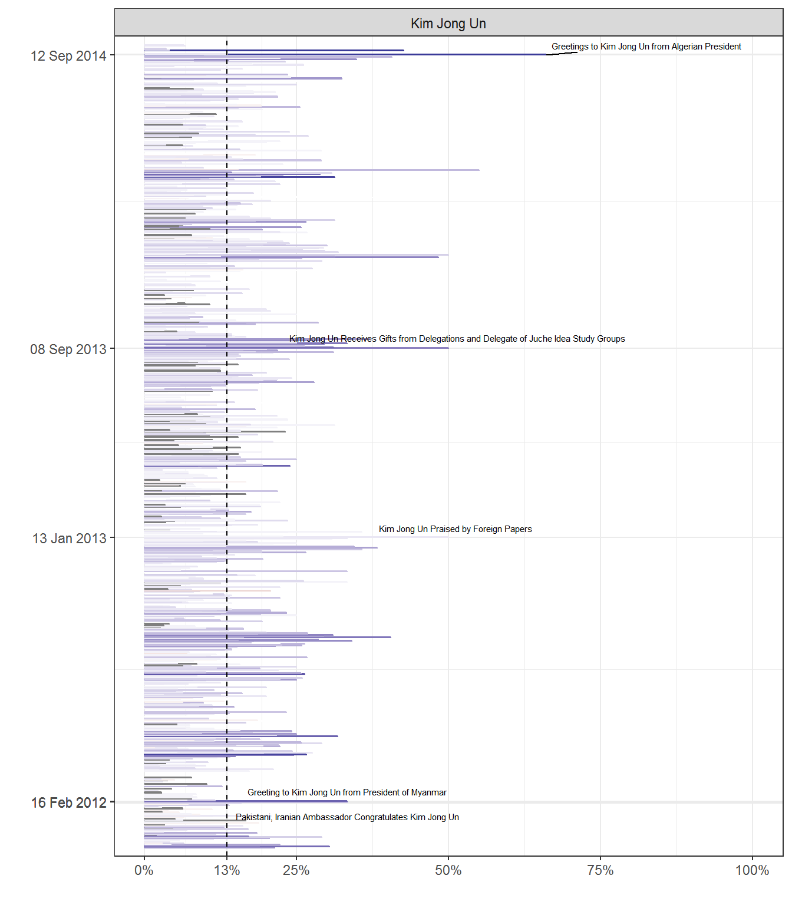
Unsurprisingly, the tone of headlines referring to the top members of the NK elite (the Kim family plus Kim Yong Nam) is generally positive, except for one red spike of negative emotion on the funeral of Kim Jong Il (20 December 2011), where most headlines mourn his demise. By contrast, Lee Myung Bak stands out in red: almost all mentions of him were clearly negative, as we should expect, while the mentions of other people vary quite a bit (since they include both North Koreans and South Koreans, allies and adversaries).
Because lexicon-based methods of sentiment detection are insensitive to context, it is nevertheless worth checking which words contribute most to positive or negative sentiment in these pictures. We can do this by looking at a comparison word cloud. (I know word clouds are supposed to be bad visualization practice and all, but I’m not looking for exact proportions of words, and these are informative enough for our purposes):
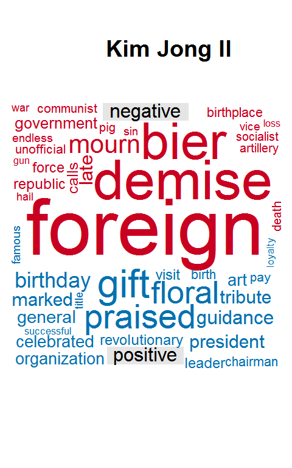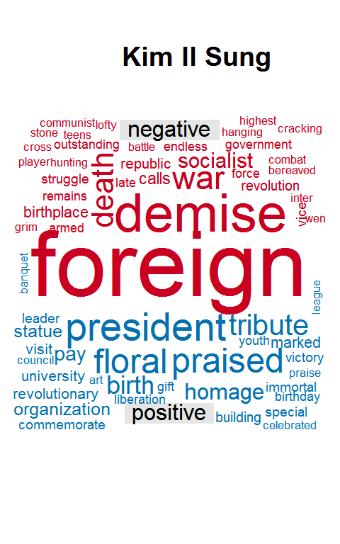
Some negative sentiment words are clear mistakes (“vice” in headlines mentioning Kim Yong Nam usually is part of “vice-premier” or a similar construction; “exploit” is typically used to refer to the great deeds of the Kims, not as a verb; “communism” is hardly a negative term in NK official ideology, even though it’s not mentioned very often), and some words are dubiously classified (“foreign” does not always have a negative connotation, even in headlines by KCNA - especially if the topic is foreigners bringing gifts!). But the overall picture is reasonable: positive headlines show “praise” and include “gifts” – denoting mostly a kind of reverence or respect – while negative headlines “slam” people as “traitors” and “condemn” the “dictatorship” (usually of South Korea), in a key of anger.5
Similarly, there is nothing too surprising about the tone of headlines that mention the regime’s three main adversaries and its one patron: the United States, South Korea, and Japan are mostly presented negatively (though Japan less so than the other two countries, in part because headlines mentioning Japan often have something to do with Chongryon, the association of North Korean residents in Japan), while China is mentioned mostly in headlines with positive sentiment. (Some of these countries are mentioned more often than almost any individual person; for example, South Korea is mentioned in about 10% of all headlines, and in 12% of the headlines on dates where it is mentioned at least once):
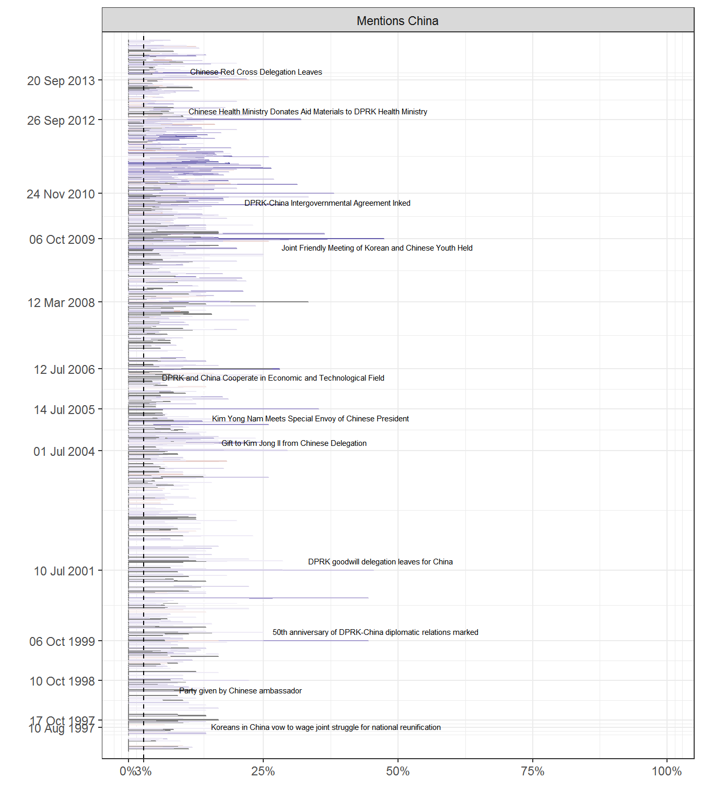
Sentiment in the headlines mentioning South Korea also seems to track known changes in South Korean policy. For example, the “sunshine policy” from 1998-2007 coincides with a generally greater positive sentiment in headlines involving South Korea (not that there aren’t lots of negative headlines, but it’s a “bluer” period in the image), but becomes more negative with the election of Lee Myung Bak in 2008. This is to be expected, but it’s nice to know that the sentiment lexicon is not giving us totally idiotic results.
The NRC lexicon can also be used to score a text according to whether particular words are associated with one of eight emotions: anger, anticipation, disgust, fear, joy, sadness, surprise, and trust. We can use these scores to construct more detailed “sentiment profiles” for the top people and countries mentioned. In the pictures below, we thus plot the proportion of words classified as belonging to a particular emotion in the lexicon for each date. (This lexicon is limited; for some dates, no words in the headline can be classified as belonging to any particular emotion):
Though the overall sentiment scores are plausible, these plots suggest that the sentiment classifications for individual emotions are less reliable. According to the NRC lexicon, for example, the dominant emotions over the years for headlines that mention Kim Jong Il are joy and trust (no surprise) and surprise (more surprising, this), and further investigation reveals that most of the headlines coded as having high levels of “surprise” mention Kim Jong Il receiving gifts, or noting the “good fortune” he brought to NK or the planet – an indication of the perils of automated sentiment coding. (Again, this is more respect or reverence). And headlines mentioning Kim Jong Il that are coded as having some “disgust” content are typically headlines that mention visits to pig farms, socialism (not a disgust term in KCNA!), or sending wreaths to funerals (the latter of which might be better coded as “respect” again). Many words are also (rightly) classified as expressing more than one emotion, though a more contextually sensitive technique might be able to disambiguate them.
Similarly, though the overall emotion profiles for particular countries are plausible (e.g., the disgust coding for mentions of the USA seems pretty accurate – high-disgust headlines mentioning the USA usually talk about its “hideous terrorism”) the scoring of particular emotions (joy and South Korea, for example, which includes lots of mentions of “amnesty”) is sometimes puzzling. This is to be expected; one would need to probably use a more powerful method (e.g., supervised ML coding of sentiment, with some form of adjustment to account for the fact that different people and countries are mentioned more or fewer times) to get a more accurate picture of specific emotions in the corpus.
One interesting point we can see from these graphs (despite their potential inaccuracies) is that some figures and countries have more complex “emotional profiles” than others. The headlines that mention Kim Jong Il, for example, display a wider range of emotion (according to the NRC lexicon) than the headlines mentioning Kim Il Sung or Kim Jong Un, let alone Kim Yong Nam (whose headlines are mostly associated with trust, as he typically appears in them when it’s a question of receiving this or that delegation). This is probably not because of more ambiguous attitudes by KCNA to Kim Jong Il, but simply because other people are always mentioned in very narrow contexts (as we shall see below). For example, Kim Il Sung, being dead for most of this period, was mentioned mostly in a context of remembrance, whereas Kim Jong Il is portrayed in a wider set of situations.
Similarly, South Korea also has a more complex emotion profile than the other countries – more so than China, for example. Though the dominant emotions are often negative, there’s a fair amount of positive emotion as well, especially when South Korean organizations are presented as praising North Korea or doing things the regime approves. There is nothing necessarily surprising about this, to be sure, as the North-South relationship is intrinsically complex, including civil society groups in South Korea that are sometimes friendly to the North’s aims.
Cult calendars: what days are special for KCNA?
Leader cults have calendars. Mentions of the leader are not uniformly distributed, but peak at particular days in with special significance. We can automatically identify these days by looking at the days where the proportion of mentions of each member of the Kim family is unusually high:
For Kim Jong Il, the main cult days indicated by KCNA are the days following his death (20 December – he died on 17 December), the anniversary of the Worker’s Party of Korea (celebrated 10 October), the anniversary of the founding of the DPRK (9 September), 16 April (the day after the birthday of Kim Il Sung), 16 February (his own birthday), and the day after New Year’s day (2 January), when the New Year’s address is discussed. Similarly, for Kim Il Sung peak cult days are his birthday (15 April), the days surrounding his death (July 8; mentions peak on the 10th), and the day following the proclamation of the DPRK, which is also the day in which he first assumed office as president (mentions peak on 10th September rather than the 9th).
For Kim Jong un, interestingly, peak mentions do not appear to include his birthday (8 January, according to Wikipedia), though they do include the other traditional days: the New Year, the anniversary of the Worker’s Party, his father and grandfather’s birthdays, and the days around the anniversary of the DPRK (though his mentions peak on the 12th instead of the 9th). Interestingly, only Kim Jong Un is disproportionately mentioned around the “Day of Victory in the Great Fatherland Liberation War” (end of the Korean War, 27 July, though mentions peak on the 26th). The fact that Kim Jong Un’s peak mentions are subtly different from those of his father and grandfather – including an increasing association with the end of the Korean War, which ended before his birth, and the downplaying of his birthday – seems significant: KCNA does not want to emphasize that the grandson was not born in the heroic time of the founding of the DPRK, but it does want to associate him with its victorious birth, like his grandfather.
Many but not all of these peak mention dates are official North Korean holidays. For example, death anniversaries of Kim Il Sung and Kim Jong Il, despite their high “cultic” content (lots of mentions in KCNA) are not, apparently, official holidays (as far as Wikipedia knows, at least). And peak mentions of one of the Kims sometimes occur after the event being commemorated. For example, mentions relating to Kim Jong Il’s death peak on the 20th of December (the day of his funeral), rather than on the 17th (when he actually died), while peak mentions of Kim Jong Un in September occur on the 12th rather than on the 9th, when KCNA typically reports that he receives congratulations by world leaders on the occasion of the DPRK’s anniversary.
Mentions of the Kims on “cult days” are distinctive in a couple of other ways. In particular, “cult days” use different formulae to refer to the Kims. We can see this by trying to identify the “distinctive” words used on cult vs. non-cult days. In the charts below, we consider the term frequency/inverse document frequency of words in headlines (a measure of the distinctiveness of words in documents) for the headlines mentioning the three ruling Kims (taking all headlines in cult days for each figure as a “document”), and separating the mentions according to whether they fall on special “cult calendar” days:
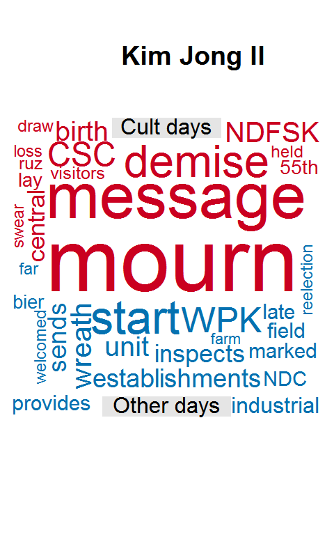
(Distinctive words by tf-idf value, on cult vs. non-cult days. Size indicates tf-idf value, not count.)
On cult days, the Kims are “commemorated” and “congratulated,” and given gifts by foreign leaders, while the headlines emphasize tribute paid to the statues of the two elder Kims. (By looking at a sample of headlines that mention these tributes, we can see that they often consist of making “floral offerings” – of Kimilsungia or Kimjongilia flowers, presumably – in front of the statues). By contrast, on non-cult days the headlines emphasize the activities of the Kims. We might say that they are more passive on cult days, and more active in other days, though the differences are not always sharp.
Ceremonial Language: How does KCNA speak about the Kims?
A quick glance at the KCNA headlines suggests that, while alive, the leader inspects, surveys, and gives guidance; and is in turn praised and honored, and remembered when dead. Reports of foreigners praising the Kims, giving them gifts, and publishing their work, are especially common. A cool way of visualizing these patterns is to use Sankey Diagrams, which reveal the main text flows around mentions of the Kims in the headlines (and look like medusa heads or river deltas to boot; more data art!). These diagrams may be understood as graphical summaries of concordances, a common way of examining and comparing word contexts in a text corpus.
Here I show the flows around the top 15 words before and after mentions of each of the Kims (and up to four words of context on each side):
And here’s Lee Myung Bak for comparison:
Here’s how to read these interactive diagrams. If you hover over a node (say, Kim Jong Il), it shows the number of mentions of that particular word in the english-language headlines (7,969 times in this case). Of these 7,969 mentions, 2,913 times the following word is “s” – as in “Kim Jong Il’s” – as we learn from hovering over the path between the two nodes – and more than 1,000 of these mentions are in turn followed by “work” (as we learn from hovering over the path between the “s” node and the “work” node). So the headlines mentioning Kim Jong Il – already a good 8% of the total – spend more than 1/8th of the time noting something about his work, in particular that it was published or posted in different countries, or praised by different foreign organizations or individuals, judging from the following nodes in the diagram. (Nodes with the label “…” just collapse many terms together that do not occur sufficiently frequently, so each “column” in the diagram only has 15 nodes).6
Thus, according to KCNA, Kim Jong Il spent a considerable amount of time inspecting KPA units (577 headlines!), sending wreaths to biers (181 headlines), enjoying performances and other artistic endeavours (216 headlines), and giving field guidance (over 200 headlines!). And the son follows in his footsteps, if perhaps with a less single-minded focus on the KPA (possibly a sign of changing priorities away from the “military first” policy of Kim Jong Il?).
The grandfather, being dead, is primarily praised, remembered, and commemorated; his works are published, and floral baskets or tributes are laid at his statues on his birthday (probably containing this flower). When he is referred to by a title, he is simply called “president” (just as his son is usually referred to as “secretary” and very rarely “general”). By contrast, an opponent, like Lee Myung Back (or George W. Bush), is denounced, censured, accused and otherwise struggled against, primarily by North Korean media and people in South Korea. With slight variations here and there, each of these “types” of headline are essentially uniform: “Kim Jong Il inspects KPA unit X” is repeated literally 200 times in the corpus of English-language headlines, for example.
There is thus a remarkable consistency to these headlines; it is not unfair to call them “formulaic.” We might think here of a kind of ceremonial language, single-mindedly reiterated for over 15 years, and painting an unvarying picture of the Kim’s activities and honours. (Indeed, if you take a random sample of headlines mentioning the Kims, it is usually not possible to know when any given headline was written – such is the degree of uniformity).
One striking pattern that emerges from these graphs is that the Kims rarely “order” anyone to do anything. The picture provided by the headlines is of kindly guidance and filial duty, not of command. Though they teach or inspect various establishments, they never simply assert their dominance; and though they receive many gifts (see below), a substantial proportion of their activity, according to KCNA, consists in sending wreaths to the biers of the illustrious dead, or gifts to elder people (a couple of headlines mention gifts to centenarians).
All the aggressive vocabulary we might associate with NK propaganda – slamming, flaying, denouncing, urging, or otherwise attacking enemies – is missing from headlines that mention the Kims, being associated instead with the media organs of the DPRK, such as the newspaper Rodong Sinmun or Minju Joson:
The Kims thus stand above the fray, while the abstract organs of the state and party engage in combat against ideological enemies. Perhaps this is in accord with B. R. Myers’ thesis that NK propaganda tends to depict the Kims as more “motherly” than “fatherly” figures. But in any case one might also detect a hint of a broad “Confucian” cultural background here, if I may generalize; there is a great deal of filial piety (both to and from the Kims) in some of these headlines, and they do refer to the leader occasionally as “fatherly” (and to the party as “motherly” – I won’t show you the graph here, but it appears at least 3 times).
Another aspect of the language through which the Kims are depicted is the extreme focus on their receipt of gifts and tribute from around the world. Indeed, I count 762 english-language headlines that mention “gifts” to the Kims from identifiable foreign countries, most from North Korea’s near abroad and allies – China and Russia most of all, but also Mongolia, Japan, and Iran (and 14 gifts from the USA!):
Many headlines also report gifts to the Kims from unknown persons, or without explicitly mentioning a country of origin (the plain headline “gifts to Kim Jong Il” appears literally 30 times). All these mentions of gifts are strictly prosaic; they constitute a catalog, devoid of literary embellishment, not an occasion for poetry. Occasionally a gift may be described (“a lacquered vase”, “a crystal-made flower basket”, “a woolen carpet” - the gifts themselves are not very special), but the main point of the headline is to record that a gift was made, not what it was.
The overall picture produced is thus one in which the North Korean ruler, rather than being a client of China or Russia (as reality suggests), appears as a sort of benevolent overlord, receiving their tribute and rarely sending anything back. Indeed, the flow of gifts is always primarily to the Kims, not from them; while 981 headlines mention gifts to Kim Jong Il, only 34 mention gifts from Kim Jong Il, most of these to Chinese people or other communist leaders (of which 3 went to Fidel Castro, the most of any individual leader recorded here!):
Note that these figures underestimate the actual number of gifts received by the Kims, since they only count headlines that mention the words “gift” or “gifts”. Many headlines speak directly of tribute or describe a particular gift – typically a floral basket or a congratulatory letter – without using the word gift. Including these would just about double the total number of “tributes” reported in the headlines.
Incidentally, the recording of gifts is in keeping with the general tendency of KCNA not to report easily falsifiable facts (cf. Tom Pepinsky on this point). The point of the headlines and stories is not to obviously deceive (the gifts, after all, are stored in the International Friendship Exhibition hall), but to paint a particular picture of the leader receiving tribute from powerful people and organizations.
The problem is that, though this picture may produce some effects among people who do not have access to any alternative information sources (as the wiki page about the International Friendship Exhibition suggests, without much evidence), it would seem to be totally ineffective when we think of the likely readership of KCNA. The propaganda apparatus here seems to be automatically producing content, or simply echoing the more important internal propaganda, rather than carefully thinking about how to produce an effect on external audiences. It is a of “ceremonial” propaganda, in which the state flatters itself without regards to external audiences, rather than a more clearly instrumental enterprise directed to shaping the views of others.
The Uniformity of Propaganda
The ceremonial character of KCNA’s propaganda is also evident in its remarkable uniformity. One indication of this is the difficulty one has in guessing the time period in which a randomly selected headline was written, unless they explicitly mention a particular person or event that can be identified as a historical anchor;7 the headlines are fractally similar in every period, we might say. And while it’s of course possible to slice and dice them in many different ways, my best guess is that the headlines typically fall into only about 8-10 topics, which recur in relatively constant proportions and with generally similar vocabulary year after year, with some fluctuations in response to events or great cult holy days.
First, there is an “achievements of the Kims” topic, where the work, feats, and ideas of the Kims are celebrated, especially by foreigners (e.g., “Kim Jong Il’s work off the press in Nicaragua”, “Kim Il Sung’s Idea of Great National Unity Lauded”). Second, there is a “tribute and honour” topic, where they are shown receiving gifts or granting gifts or honours to others (“Wreath from Guinean president”, “Representatives of CCP Mourn Demise of Kim Jong Il”). Here we find the many headlines noting gifts and floral tributes, or the similarly numerous ones depicting the Kims sending wreaths to the biers of the illustrious dead of the nation. Third, there is an “economic and social achievements of the nation” topic, where the headlines report on the progressive economic and social development of the DPRK, and show the Kims providing guidance to factories or other enterprises (“Kim Jong Il Visits Wonsan Youth Power Station”); and fourth, a “cultural and artistic achievements of the nation,” which notes artistic performances, sports events, and the like, and sometimes associates them with the leader (“DPRK Judokas Prove Successful at Military Judo Championship”, “Secy. Kim Jong Il enjoys performance of choir”).
The fifth and sixth topics depict the diplomatic activities of the DPRK’s political elites (“FM Kim Yong Nam meets Pakistani ambassador”) and encourage reunification (“Rodong Sinmun Demands End to Separatist Moves of S. Korean Authorities”). The seventh stresses international solidarity with North Korea, and in turn puts a positive light on adversaries of the Americans (e.g., Iran, the PLO). The eight and ninth focus on criticism of South Korean (“S. Korean Authorities Hit for Violating Workers’ Vital Rights”, “Explosive unemployment in S. Korea”) and American (“American-style”Globalization" Bound to Go Bust - Commentary on International Situation“) society and politics (including military moves by the US or South Korea). Sometimes one can find headlines that stress natural disasters around the world, but especially in countries that are perceived to be North Korea’s adversaries (”Continuous Earthquakes in Japan“); these may fall into a different topic; and there are many headlines that are about celebrations and anniversaries of important parts of Korean history.
Note what’s missing here: communism and socialism, and the associated rhetoric. The vocabulary of Marxism is not wholly absent from KCNA – socialism is mentioned in about 100 english-language headlines, often in connection with the “Juche” idea and national identity; Marx and marxism are mentioned 4 times; Lenin and leninism 6; and there’s the occasional mention of the bourgeoisie and the proletariat. And of course the headlines cannot avoid speaking of workers – after all, the ruling party is the Worker’s Party of Korea, and the word “worker” does appear several hundred times, mostly in connection with critiques of South Korea. But national terms predominate; and of the classical Leninist terminology, the only term that seems to get a lot of use is “imperialism” (and its cognates). Once again, B. R. Myers is right; North Korean ideological constructions are not particularly Marxist in orientation, instead focusing on nationalistic themes. (Indeed, one might argue that most of the communist revolutions of the 20th century – Vietnam, China, etc. – except for the Russian one, were ultimately national in orientation; but that’s a story for a different day, or person).
We can visualize the uniformity of KCNA’s content with a topic model. After trying many different things, I find that using about 10 topics gives reasonable results when fitted either to the headlines only or to the stories in a given year (I was also able to scrape most KCNA stories from 2011), though fewer can work fine too - the topics do tend to clump into about 3-4 broadly similar clusters. Here’s what the topic proportions look like per year, with a 10 topic model fitted to the headlines (with each “document” the headlines for the entire year):
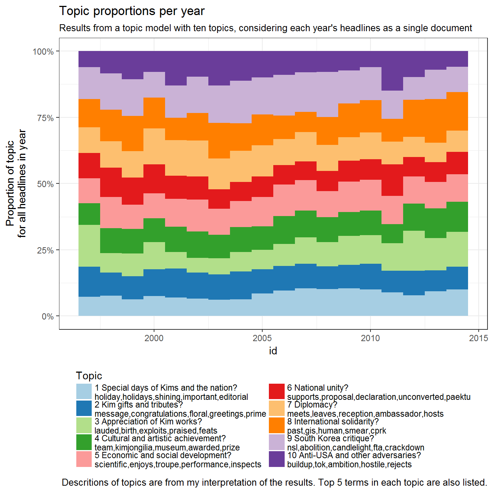
(Note the increase in Kim topics in 2012, the year after the death of Kim Jong Il in December 2011. See a more detailed interactive topic browser here. Topic numbers in the interactive visualization will be different from those above).
If we wanted to simplify this picture, we might say that KCNA spends about a quarter of the time praising and honoring the Kims, another quarter critiquing North Korea’s adversaries, and the rest extolling North Korea’s economic and cultural development and its cooperative disposition. The daily variation in these topics is of course much higher than their annual variation, but the trends are flat, and many (not all) peaks in some of these topics correspond to days where the topic is expected to peak (e.g., cult days for the “homage to Kims” topic):
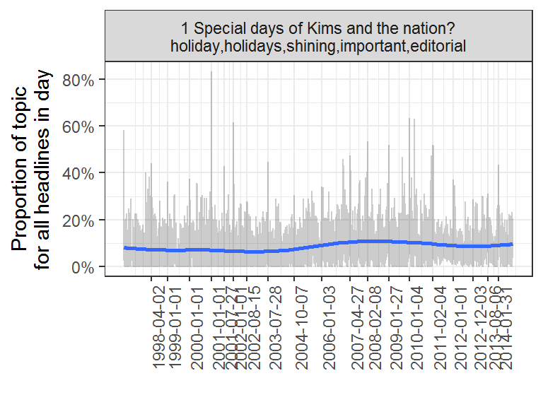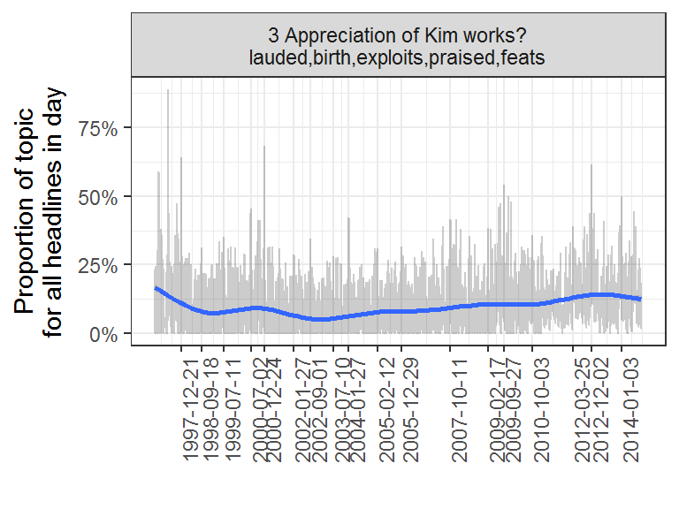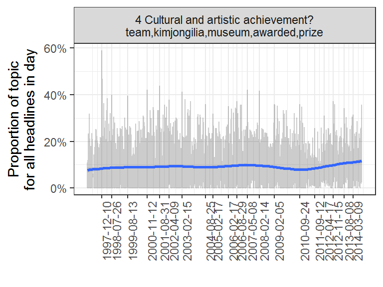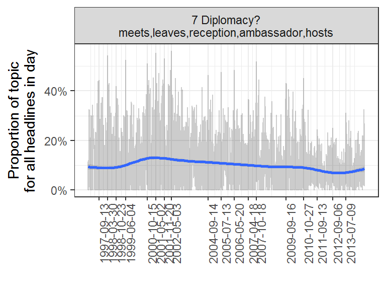
(I did some time-series decomposition of these topics, but because of missing headlines for some days and changes after the death of Kim Jong Il this turns out to be harder than it looks, so I won’t bore you with the details, but nothing much changes – trends remain flat, seasonal peaks seem to correspond many times to major anniversaries, and so on. But you might get better results with a supervised approach to classification in any case).
Because the headlines by themselves are so short and cryptic, topic modeling may work better (i.e., give more interpretable results) when using the entire stories from KCNA. So here’s the model fitted to the stories from 2011 (topics are not the same as those extracted by looking at the headlines only), with a great big spike in the “homage to the Kims” topic after the death of Kim Jong Il on 17 December:
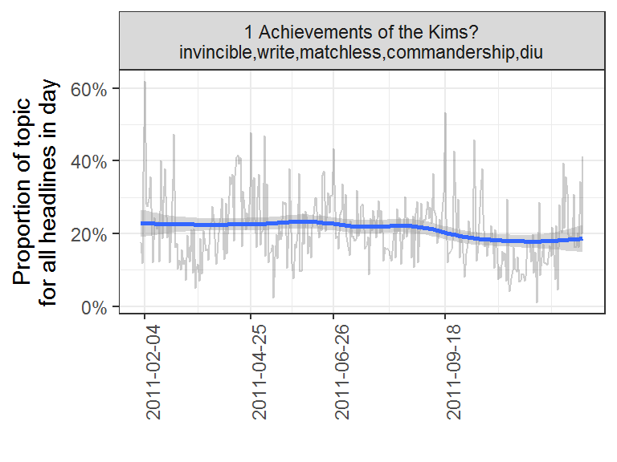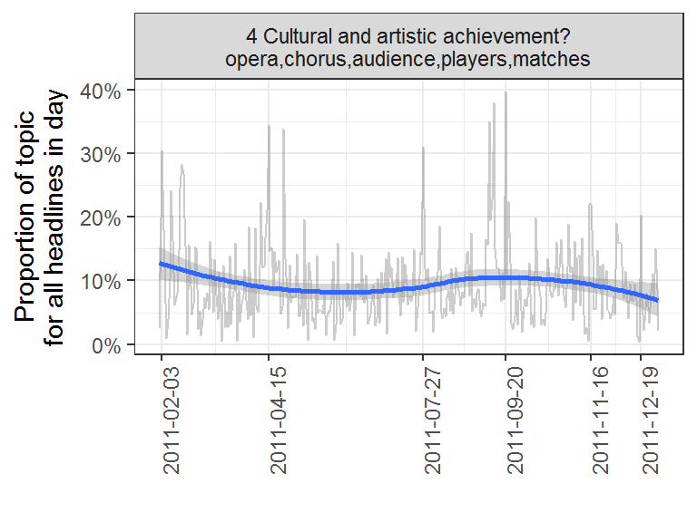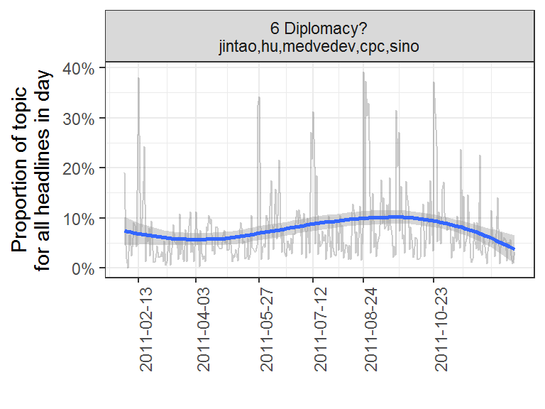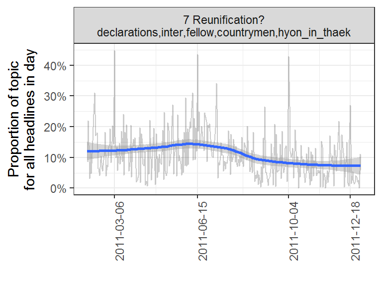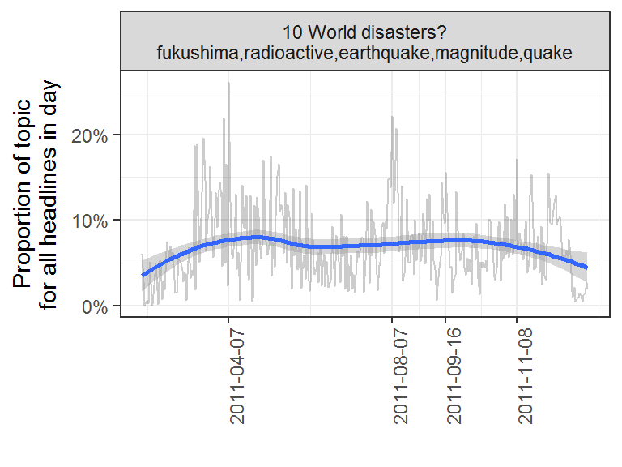
And if you’re interested, here’s an interactive topic browser for the model (topic numbers are different from those above).
Topic models do not always give intuitive results, and the specific terms that would be salient in a given model will vary depending on the random seed, the number of topics chosen, and the specific software used. But in general, it seems to be the case that KCNA propaganda is relatively uniform in time, with only large shocks (like the death of Kim Jong Il above) making much of a difference in its choice of topics.
Ceremonial Propaganda?
In some ways, none of the patterns discussed above should be surprising. It is well known that North Korean propaganda is highly nationalistic; that it fosters a cult of the Kims; and that it can be filled with invective against the North’s adversaries. But it is still interesting to see concretely how these patterns are manifested in content that can hardly have much persuasive effect, given its audience. KCNA propaganda is not, by the instrumental standards usually applied to these matters, a great success for outside audiences (unlike, e.g., the information operations of the Russian state, or perhaps the internal propaganda used in North Korea itself). As a kind of literature, however, displaying a fictional picture of reality without much regard for its effectiveness, there is something remarkable in the single-mindedness of its adherence to its own self-imposed canons.
Data and code details
I’ve bundled the data used to produce this post in an R package, available from this repository. To install from R, use devtools::install_github(repo = "xmarquez/KCNA"). Check the Readme file for more info. The code used to produce this post is available here as an .Rmd file; there may be a paper eventually too.
Finally, a couple of shout outs. Julia Silge’s tidytext package is great – it really simplifies text analysis! If you do any kind of text analysis, I highly recommend it. And Dmitriy Selivanov’s text2vec package implementation of topic modeling and word vector embedding is superfast and powerful; also highly recommended.
It may have changed by now, though I doubt it. I can’t access it anymore, so I wouldn’t know.↩
For those who care about the details, the exponent is around 1.5 for the top 44 or so most mentioned people.↩
See this NYTimes Magazine piece on AI at Google for a non-technical explanation of how word vector embeddings work and what they capture. This is surprisingly easy to do with a small corpus like the KCNA headlines thanks to the fantastic text2vec R package by Dmitriy Selivanov, even on an old crappy computer. AI for the masses!↩
Sentiment scores obtained with other sentiment lexicons are correlated at the 0.7-0.8 level.↩
Different sentiment lexicons show somewhat different patterns – the AFINN or BING lexicons may give more weight to some other words in scoring the overall negative or positive sentiment of a headline – but nothing really affecting the larger picture.↩
If you download the package used in this post, you can try more of these graphs on your own. Try “bush” for some further choice invective, or “communism” to note the paucity of classical marxsit language.↩
One could model this properly by creating a model to predict the year from the words in the headlines – but I haven’t gotten around to it.↩